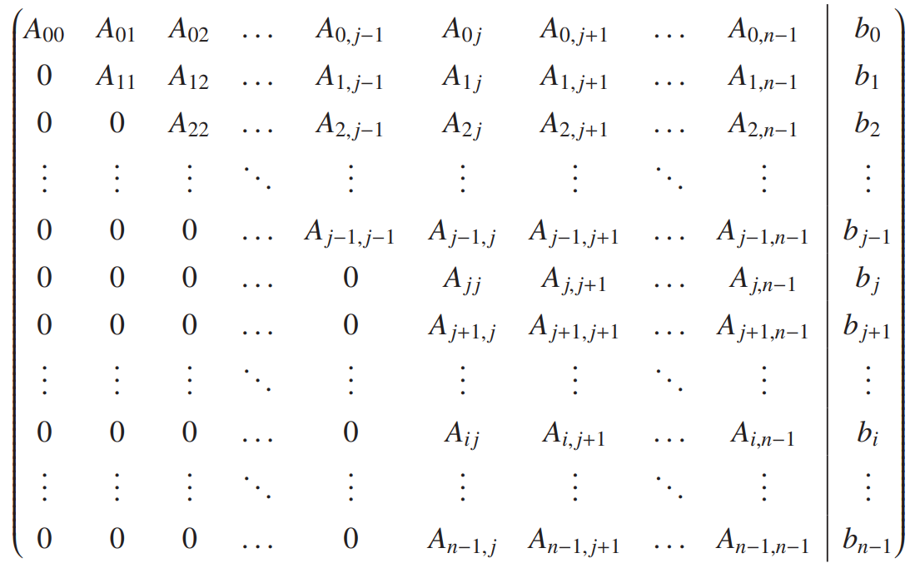

In the previous lecture we studied in detail the conditioning of linear-algebra problems. We didn’t explain how we produced the different answers for, e.g., the norm, the eigenvectors, etc. We simply called numpy functions to do the jobs.
It’s now time to discuss how to solve simultaneous linear equations on the computer:
\boldsymbol{A}\boldsymbol{x} = \boldsymbol{b}.
We will structure our discussion in an algorithm-friendly way, i.e., we will write the equations in such a way as to enable a step-by-step implementation in Python later.
1 Triangular Matrices
We start with the simplest case possible, that of triangular matrices (for which all elements either above or below the diagonal are zero). This is not simply a toy problem: many of the fancier methods for the solution of simultaneous equations, like those we discuss below, manipulate the starting problem so that it ends up containing one or two triangular matrices at the end.
We immediately note that in the real world one rarely stores a triangular matrix in its entirety, as that would be wasteful: it would entail storing a large number of 0s, which don’t add any new information; if we know that a matrix is triangular, the 0s above or below the diagonal are implied. In state-of-the-art libraries, it is common to use a single matrix to store together an upper-triangular and a lower-triangular matrix (with some convention about the diagonal, since each of those triangular matrices also generally has non-zero elements there). Here, since our goal is pedagogical clarity, we will opt for coding up each algorithm “naively”, namely by carrying around several 0s for triangular matrices. Once you get the hang of things, you will be able to modify our codes to make them more efficient (as one of the problems asks you to do).
1.1 Forward Substitution
Start with a lower-triangular matrix \boldsymbol{L}. The problem we are interested in solving is:
\boldsymbol{L}\boldsymbol{x} = \boldsymbol{b}.
This can be expanded into equation form:
\begin{align*}
L_{00} x_0 & = b_0 \\
L_{10} x_0 + L_{11} x_1 & = b_1 \\
L_{20} x_0 + L_{21}x_1 + L_{22}x_2 & = b_2.
\end{align*}
The way to find the solution-vector components should be fairly obvious: start with the first equation and solve it for x_0. Then, plug in that answer to the second equation and solve for x_1. Finally, plug x_0 and x_1 into the third equation and solve for x_2. We have:
x_0 = \frac{b_0}{L_{00}},\quad x_1 = \frac{b_1 - L_{10}x_0}{L_{11}}, \quad x_2 = \frac{b_2 - L_{20}x_0 - L_{21}x_1}{L_{22}}.
This process is known as forward substitution, since we solve for the unknowns by starting with the first equation and moving forward from there. It’s easy to see how to generalize this approach to the n\times n case:
with the understanding that, on the right-hand side, the sum corresponds to zero terms if i=0, one term if i=1, and so on.
Back Substitution
You can also start with an upper-triangular matrix \boldsymbol{U}:
\boldsymbol{U}\boldsymbol{x} = \boldsymbol{b}.
As above, for concreteness, we study the 3\times 3 problem
\begin{pmatrix}
U_{00} & U_{01} & U_{02} \\
0 & U_{11} & U_{12} \\
0 & 0 & U_{22}
\end{pmatrix}
\begin{pmatrix}
x_0 \\ x_1 \\ x_2
\end{pmatrix}
=
\begin{pmatrix}
b_0 \\ b_1 \\ b_2
\end{pmatrix}.
This can be expanded into equation form:
\begin{align*}
U_{00} x_0 + U_{01}x_1 + U_{02}x_2 & = b_0 \\
U_{11} x_1 + U_{12} x_2 & = b_1 \\
U_{22} x_2 & = b_2
\end{align*}.
We can obtain
x_2 = \frac{b_2}{U_{22}}, \quad x_1 = \frac{b_1 - U_{12}x_2}{U_{11}},
\quad x_0 = \frac{b_0 - U_{01}x_1 - U_{02}x_2}{U_{00}}.
This process is known as back substitution, since we solve for the unknowns by starting with the last equation and moving backward from there. It’s easy to see how to generalize this approach to the n\times n case:
We will now engage in an activity which is very common in linear algebra: we will count how many floating-point operations it takes to carry out a specific calculation (these are also called “flops”). If a given computation scales poorly (e.g., exponentially) with the size of the problem, then it will be hard to increase the size much more than what is currently possible. If the scaling is not “too bad” (e.g., polynomial with a small power), then one can keep solving bigger problems without needing to employ dramatically new hardware.
In such studies, you will frequently encounter the O symbol which is known as big-O notation. Thus, a method that scales as O(n^3) is better than another method that scales as O(n^4) (for the same problem), since the power dominates over any prefactor when n is large. Note that when one explicitly counts the number of additions/subtractions and multiplications/divisions, one is sometimes interested in the prefactor, e.g., 2n^3 is better than 4n^3, since the former requires only half as many operations. On the other hand, lower powers don’t impact the scaling seriously so you may sometimes encounter expressions such as 2n^3 − 7n^2 + 5n written as \sim 2n^3, simply dropping the lower-degree terms.
Let’s study the case of matrix-vector multiplication explicitly,
\boldsymbol{y} = \boldsymbol{A}\boldsymbol{x}, \quad y_i = \sum_{j=0}^{n-1}A_{ij} x_j.
We see that for a given y_i we need, on the right-hand side, n multiplications and n-1 additions. Thus, since we have n terms for the y_i’s in total, we are faced with n\times n multiplications and n\times(n − 1) additions in total. If we add both of these results up, we find that matrix-vector multiplication requires precisely 2n^2 −n floating-point operations. As above, you will frequently see this re-expressed as \sim 2n^2 or even as O(n^2).
1.4 Operation Count for Forward Substitution
For concreteness, we will examine only forward substitution (but the answer turns out to be the same for back substitution), based on
x_i = \left(b_i - \sum_{j=0}^{i-1}L_{ij}x_j \right)\frac{1}{L_{ii}},\quad i = 0, 1, \dots, n-1.
It is easy to see that each of the x_i requires one division, so n divisions in total. It’s equally easy to see that for a given x_i, we need to carry out i multiplications and i subtractions (check this for a few values of i if it’s not immediately obvious). Thus, we can group the required operations into two categories.
First, we require
\sum_{i=0}^n-1 i = \frac{n(n-1)}{2} = \frac{n^2 - n}{2}
additions/subtractions.
Second, we require
n + \sum_{i=0}^{n-1}i = \frac{n^2 +n}{2}
multiplications/devisions.
If we add both of these results up, we find that forward substitution requires precisely n^2 flops. This could be expressed as O(n^2), but the latter form is less informative: in our explicit calculation we have found that the prefactor is exactly 1.
2 Gaussian Elimination
We now turn to the problem of solving linear simultaneous equations for the general case, i.e., when we are not dealing with a triangular matrix. We will solve
\boldsymbol{A}\boldsymbol{x} = \boldsymbol{b}
for general matrix \boldsymbol{A}.
In essence, this method employs the third elementary row operation we introduced in the previsou lecture Matrices I: a row/equation may be replaced by a linear combination of that row/equation with any other row/equation.
After doing this repeatedly (in what is known as the elimination phase), we end up with an upper-triangular matrix, at which point we are at the back substitution phase which, as we just saw, is easy to carry out.
2.1 Example
Let us consider a concrete 3\times 3 problem that we can solve by hand.
\begin{pmatrix}
2 & 1 & 1 \\
1 & 1 & -2 \\
1 & 2 & 1
\end{pmatrix}
\begin{pmatrix}
x_0 \\ x_1 \\ x_2
\end{pmatrix}
=
\begin{pmatrix}
8 \\ -2 \\ 2
\end{pmatrix}.
We can compactly write the problem as
\left(
\begin{matrix*}[r]
2 & 1 & 1 \\
1 & 1 & -2 \\
1 & 2 & 1
\end{matrix*}
\
\right|
\left.
\begin{matrix*}[r]
8 \\ -2 \\ 2
\end{matrix*}
\right)
Gaussian elimination employs the third elementary row operation, i.e., we will replace a row with that same row plus another row (times a coefficient). Specifically, we first pick a specific row, called the pivot row, which we multiply with a number and then subtract from the row we are transforming. Let’s use j as the index that keeps track of the pivot row and i for the index corresponding to the row we are currently transforming (as usual, for a 3\times 3 problem our indices can have the values 0, 1, or 2). The operation we are carrying out is:
\mathrm{New\ row\ }i = \mathrm{row\ } i - \mathrm{coefficient}\times\mathrm{row\ } j.
The coefficient is selected such that after the transformation the leading number in row i is a 0. Perhaps this will become more clear once you see the algorithm in action.
We begin with j=0, taking the first equation as the pivot row. We then take i = 1 (the second row) as the row to be transformed: our goal is to eliminate the element in the first column (i.e., the term corresponding to x_0). To do this, we will replace the second row with the second row minus the first row times 0.5 (since 1 − 0.5 \times 2 = 0). Obviously, we have to carry out this calculation for the entire row, giving us:
\left(
\begin{matrix*}[r]
2 & 1 & 1 \\
0 & 0.5 & -2.5 \\
1 & 2 & 1
\end{matrix*}
\
\right|
\left.
\begin{matrix*}[r]
8 \\ -6 \\ 2
\end{matrix*}
\right).
Next, for the same pivot row (j = 0), we will transform the third row (i = 2), again by multiplying the pivot row with 0.5 and subtracting. We get
\left(
\begin{matrix*}[r]
2 & 1 & 1 \\
0 & 0.5 & -2.5 \\
0 & 1.5 & 0.5
\end{matrix*}
\
\right|
\left.
\begin{matrix*}[r]
8 \\ -6 \\ -2
\end{matrix*}
\right).
We now see that our work with j=0 as our pivot row is done: all the rows below it have been transformed such that the 0th (first) column contains a zero.
We now take j = 1, i.e., use the second equation as our pivot row. (We always use the latest version of the matrix, so our j = 1 pivot row will be the result of our earlier transformation.) The rows to be transformed always lie below the pivot row, so in this case there’s only one row to change, i = 2 (the third row). We multiply the pivot row with 3 and subtract from the third row, in order to eliminate the element in the second column (i.e., the term corresponding to x_1), since 1.5 − 3 \times 0.5 = 0. This gives us:
\left(
\begin{matrix*}[r]
2 & 1 & 1 \\
0 & 0.5 & -2.5 \\
0 & 0 & 8
\end{matrix*}
\
\right|
\left.
\begin{matrix*}[r]
8 \\ -6 \\ 16
\end{matrix*}
\right).
Our coefficient matrix is now in triangular form, so the elimination phase is done. We can use the backward substitution to obtain
x_2 = \frac{16}{8} = 2,\quad x_1 =\frac{-6 - (-2.5)\times 2}{0.5} = -2 ,\quad
x_0 = \frac{8 - 1\times (-2) - 1\times 2}{2} = 4.
2.2 General Case
Having gone through an explicit case step by step, it should be relatively straightforward to generalize this to the n \times n problem. First, we repeat the augmented matrix (\boldsymbol{A} | \boldsymbol{b}).
As we saw in the previous section, Gaussian elimination modifies the coefficient matrix and the constant vector until the former becomes triangular. It is standard to do this by modifying the matrix elements of \boldsymbol{A} and \boldsymbol{b} (so, if you need the original values, you need to make sure you’ve made a copy of them ahead of time).
You should convince yourself that (pivot index) j can take on the values:
j = 0,1,2,\dots,n-2.
The first possibility for the pivot row is the first row, meaning all other rows have to be transformed. The last row to be transformed is the last one, so the final pivot row is the penultimate row (second from last).
Using the same notation as above, we call i the index corresponding to the row that is being transformed. Obviously, i has to be greater than j. Given what we just discussed, i takes on the values:
i = j+1, j+2, \dots, n-1.
Gaussian elimination works by multiplying the pivot row j with a coefficient and subtracting the result from row i which is currently being transformed (and storing the result back in row i). The coefficient is chosen such that (after the transformation) row i starts with a 0. Thus, looking at the snapshot in the augmented matrix:  with pivot index j, where the leading non-zero element of row i is A_{ij} and the leading non-zero element of row j is A_{jj}, we see that the coefficient has to be A_{ij}/A_{jj} (given that A_{ij} − (A_{ij}/A_{jj})A_{jj} = 0). In equation form:
\mathrm{coefficient} = \frac{A_{ij}}{A_{jj}}
Incidentally, A_{jj} is sometimes called the pivot element since it is used (divided out) in order to eliminate the leading elements in the following rows. Obviously, the other elements in row i will end up having some new values (most likely non-zero ones).
At the end of this process, the matrix \boldsymbol{A} contained in our augmented matrix will be upper triangular, so it will be straightforward to then apply the backward substitution to solve for all the unknowns.
2.3 Implementation
We will structure our code in a modular way, such that it can apply to any input matrices \boldsymbol{A} and \boldsymbol{b}, impacting the external world only via its return value.
We start out by importing some of the routines we created in our earlier code on triangular matrices. As already mentioned, we make copies of the input matrices, so we may update them at will, without impacting the rest of the program in an unexpected way (this is inefficient, but pedagogically superior).
import numpy as npdef gauelim(inA,inbs): A = np.copy(inA) bs = np.copy(inbs) n = bs.sizefor j inrange(n-1):for i inrange(j+1,n): coeff = A[i,j]/A[j,j] A[i,j:] -= coeff*A[j,j:] bs[i] -= coeff*bs[j] xs = backsub(A,bs)return xsdef backsub(U,bs): n = bs.size xs = np.zeros(n)for i inreversed(range(n)): xs[i] = (bs[i] - U[i,i+1:]@xs[i+1:])/U[i,i]return xsdef testcreate(n,val): A = np.arange(val,val+n*n).reshape(n,n) A = np.sqrt(A) bs = (A[0,:])**2.1return A, bsdef testsolve(f,A,bs): xs = f(A,bs)print(xs) xs = np.linalg.solve(A,bs)print(xs)if__name__=='__main__': A, bs = testcreate(4,21) testsolve(gauelim,A,bs)
The core of our gauelim() function consists of two loops: one over j which keeps track of the current pivot row and one over i which keeps track of which row we are currently updating.
In the inner loop, we always start from evaluating the coefficient A_{ij}/A_{jj} which will be used to subtract out the leading element in the row currently being updated. This elimination is carried out in the line A[i,j:]-= coeff*A[j,j:], which employs NumPy functionality to carry out this modification for each column in row i. Notice how nice this is: we did not need to keep track of a third index (and therefore did not need to introduce a third loop). This reduces the cognitive load needed to keep track of what’s going on: all the desired elements on one row are updated in one line. Actually, if we wanted to update the whole row, we would have said A[i,:] -= coeff*A[j,:]. This, too, employs NumPy functionality to our advantage, processing the entire row at one go. The earlier choice we made, however, to index using A[i,j:] instead of A[i,:] is better: it is not wasteful, processing only the non-zero elements. Actually, we are being slightly wasteful: the leading element in row i will end up being zero but we are carrying out the subtraction procedure for that column as well, instead of just assuming that it will vanish. The code then makes the corresponding update to the \boldsymbol{b} row element currently being processed.
After we have used all possible pivot rows, our matrix will have been updated to be upper triangular. At this point, we simply call our earlier backsub() function. This seems to be a neat example of code re-usability.
he main body of the code is quite straightforward: it creates our test matrix and calls the function that compares our new routine to the standard NumPy output. Observe how useful these earlier two functions turned out to be. We will employ them again several times in what follows. Running the code, we see that our simple Gaussian elimination code is already doing a good job matching the output of np.linalg.solve(). Note that you haven’t seen this output vector before: in the earlier code we created a lower or upper-triangular matrix starting from A, whereas now we are using the entire matrix. We always get at least seven digits of agreement between the two solution vectors. This is good, but at this point it is a bit unclear why we’re not doing a better job. We will return to this question in a later section.
2.4 Operation Count
Turning to a study of the operation count for Gaussian elimination, we keep in mind that we are interested in total floating-point operations. Thus, while it may help us to think of additions, multiplications, etc. separately, in the end we will add all of them up.
We can separate the operations into two categories:
the conversion of \boldsymbol{A} into an upper-triangular matrix together with the corresponding changes to \boldsymbol{b}
the back substitution of the resulting triangular problem.
We already know from an earlier section that the back substitution phase requires n^2 flops, so we only have to address the first category.
We know that what we keep doing is the following operation:
\mathrm{New\ row\ }i = \mathrm{row\ } i - \mathrm{coefficient}\times\mathrm{row\ } j.
The steps involved are organized by pivot rows j = 0,1,2,\dots,n-2, and are applied to the rows i = j+1, j+2, \dots, n-1.
In the first step, we have to modify the n-1 rows below the pivot row j = 0. To evaluate the coefficients for each of the n-1 rows we need n-1 divisions of the form A_{ij}/A_{jj}. For each of the n-1 distinct i’s we will need to carry out n multiplications and n subtractions (one for each column in \boldsymbol{A}) and one multiplication and one subtraction for \boldsymbol{b}. Since there are going to be n-1 values that i takes on, we are led to a result of (n+1)(n-1) multiplications and (n+1)(n-1) subtractions. Putting these results together with the divisions, in this first step we are carrying out (n-1)+2(n+1)(n+1) flops.
We turn to the second step, namely using the pivot row j=1. We have to modify the n-2 rows below that pivot row. That leads to n-2 divisions for the coefficients. Then, for each of the i’s, we will need to carry out n-1 multiplications and n-1 subtractions (one for each remaining column in \boldsymbol{A}) and 1 multiplication and 1 subtraction for b. Putting these results together, we are led to (n - 2) + 2n(n - 2) flops in total for this step.
It’s easy to see that the third step would lead to (n - 3) + 2(n-1)(n-3) flops. A pattern now emerges: for a given pivot row j, we have
(n-1-j) + 2(n+1-j)(n-1-j)
flops. Thus, for all possible values of the pivot row j we will need
\begin{align*}
N_{count} &= \sum_{j=0}^{n-2}[(n-1-j) + 2(n+1-j)(n-1-j)] \\
& = \sum_{k=1}^{n-1} [k + 2(k+2)k] = \sum_{k=1}^{n-1}(2k^2 + 5k) \\
& = 2\frac{n(n-1)(2n-1)}{6} + 5\frac{n(n-1)}{2} \\
&= \frac{2}{3}n^3 + \frac{3}{2}n^2 - \frac{13}{6}n \sim \frac{2}{3}n^3
\end{align*}
flops.
Since we already know that the back substitution stage has a cost of n^2, we see that the elimination stage is much slower and therefore dominates the cost of the calculation: symbolically, we have \frac{2}{3}n^3 + n^2 ∼ 2n^3/3.
3 LU Method
While the Gaussian elimination method discussed in the previous section is a reasonably robust approach (see below), it does suffer from the following obvious problem: if you want to solve \boldsymbol{A}\boldsymbol{x} = \boldsymbol{b} for the same matrix \boldsymbol{A} but a different right-hand-side vector \boldsymbol{b}, you would have to waste all the calculations you have already carried out and call a function like gauelim() again, performing the Gaussian elimination on \boldsymbol{A} from scratch.
Thus, we are effectively motivating a new method (the LU method) by stressing the need to somehow “store” the result of the Gaussian elimination process for future use.
3.1 LU Decomposition
Let us assume we are dealing with a non-singular matrix \boldsymbol{A} which can be expressed as the product of a lower-triangular matrix \boldsymbol{L} and an upper-triangular matrix \boldsymbol{U}: \boldsymbol{A} = \boldsymbol{L} \boldsymbol{U}, known as the LU decomposition of matrix \boldsymbol{A}.
The LU decomposition as described above is not unique. Here and in what follows, we will make an extra assumption, namely that the matrix \boldsymbol{L} is unit lower triangular, namely that it is a lower-triangular matrix with 1s on the main diagonal, i.e., L_{ii} = 1 for i = 0, 1,..., n - 1.
Let us look at examples, for 3\times 3 cases. Generically, we can write
\boldsymbol{L} =
\begin{pmatrix}
1 & 0 & 0 \\
L_{10} & 1 & 0 \\
L_{20} & L_{21} & 1
\end{pmatrix},
\quad
\boldsymbol{U} =
\begin{pmatrix}
U_{00} & U_{01} & U_{02} \\
0 & U_{11} & U_{12} \\
0 & 0 & U_{22}
\end{pmatrix}.
Now we take i = 2, and update row 2. We get
\boldsymbol{A}
=
\begin{pmatrix*}[l]
U_{00} & U_{01} & U_{02} \\
0 & U_{11} & U_{12} \\
0 & U_{11} L_{21} & U_{12}L_{21} + U_{22}
\end{pmatrix*}.
Now we take pivot row j = 1, then taken i = 2. We need to update row 2 again, which gives
\boldsymbol{A}
=
\begin{pmatrix*}[l]
U_{00} & U_{01} & U_{02} \\
0 & U_{11} & U_{12} \\
0 & 0 & U_{22}
\end{pmatrix*}.
This is a very interesting result. After Gaussian elimination, \boldsymbol{A} simply becomes \boldsymbol{U}. Moreover, \boldsymbol{L} simply stores the coefficients for the Gaussian elimination procedure. Thus, LU decomposition is equivalent to Gaussian elimination.
One comment is that actually one can store \boldsymbol{L} and \boldsymbol{U} in a single matrix to save memory.
3.2 Solving a System Using LU Decomposition
It is now time to see how the above decomposition can help in solving the standard problem we’ve been addressing, namely the solution of:
\boldsymbol{A}\boldsymbol{x} = \boldsymbol{b}.
Let’s say we have carried out the LU decomposition \boldsymbol{A} = \boldsymbol{L}\boldsymbol{U}. So our problem becomes
\boldsymbol{L}\boldsymbol{U}\boldsymbol{x} =\boldsymbol{b}.
We can rewrite the above problem as
\begin{gather*}
\boldsymbol{L}\boldsymbol{y} = \boldsymbol{b} \\
\boldsymbol{U}\boldsymbol{x} = \boldsymbol{y}.
\end{gather*}
We thus can solve the first equation to obtain \boldsymbol{y} by forward substitution. The result can be used to solve \boldsymbol{x} by backward substitution.
3.3 Implementation
The LU decomposition is implemented in the following code. We define a function ludec(), which is identical to our earlier gauelim(), except:
We don’t have to worry about the constant vector \boldsymbol{b}, since at this stage all we’re doing is LU-decomposing a given matrix \boldsymbol{A}.
We are calling the array variable that keeps getting updated \boldsymbol{U}, instead of \boldsymbol{A}.
We store all the coefficients we calculated in \boldsymbol{L} (while placing 1s in its diagonal — this could have been done at the end, instead of starting from an identity matrix).
We then create a function that solves \boldsymbol{A}\boldsymbol{x} = \boldsymbol{b}, by first forward substituting and then backward substituting. Pay attention to the modularity of the code: : the main body of lusolve() consists of three calls to other functions.
import numpy as npdef forsub(L,bs): n = bs.size xs = np.zeros(n)for i inrange(n): xs[i] = (bs[i] - L[i,:i]@xs[:i])/L[i,i]return xsdef backsub(U,bs): n = bs.size xs = np.zeros(n)for i inreversed(range(n)): xs[i] = (bs[i] - U[i,i+1:]@xs[i+1:])/U[i,i]return xsdef testcreate(n,val): A = np.arange(val,val+n*n).reshape(n,n) A = np.sqrt(A) bs = (A[0,:])**2.1return A, bsdef testsolve(f,A,bs): xs = f(A,bs)print(xs) xs = np.linalg.solve(A,bs)print(xs)def ludec(A): n = A.shape[0] U = np.copy(A) L = np.identity(n)for j inrange(n-1):for i inrange(j+1,n): coeff = U[i,j]/U[j,j] U[i,j:] -= coeff*U[j,j:] L[i,j] = coeffreturn L, Udef lusolve(A,bs): L, U = ludec(A) ys = forsub(L,bs) xs = backsub(U,ys)return xsif__name__=='__main__': A, bs = testcreate(4,21) testsolve(lusolve,A,bs)
The dominant term should be the same as the one for Gaussian elimination. So it is \sim 2n^3/3.
3.5 Matrix Inverse
One can use LU decomposition for calculating matrix inverse. Using
\boldsymbol{A}\boldsymbol{A}^{-1} = \boldsymbol{I}
where \boldsymbol{I} is the identity matrix. We calculate \boldsymbol{A}^{-1} column by column. Namely, we solve
\boldsymbol{A}\boldsymbol{x}_i = \boldsymbol{e}_i,
where \boldsymbol{A}^{-1} = (\boldsymbol{x}_0,\boldsymbol{x}_1, \dots,\boldsymbol{x}_{n-1}), and \boldsymbol{I} = (\boldsymbol{e}_0,\boldsymbol{e}_1, \dots,\boldsymbol{e}_{n-1}).
We first perform the LU decomposition for \boldsymbol{A}, which has a cost of O(n^3). We then perform one forward substitution and one backwoard substitution to solve \boldsymbol{x}_i. Both have the cost O(n^2), so that add up to give the total cost O(n^2).
Since we have to perform these substitutions for n equations, say i = 0,1,\dots, n-1, the total substitutions will have a cost O(n^2)\times n= O(n^3), which has the same order in n as the LU decomposition does. Hence, the overall cost for computing inverse is O(n^3).
As a remark, if you perform Gaussian elimination to solve each equations, we have that each equation requires O(n^3) cost. As we have n equations, the total cost will be O(n^4).
3.6 Determinant
We can compute the determinant via LU decomposition.
\det(\boldsymbol{A}) = \det(\boldsymbol{L})\times\det(\boldsymbol{U}) = \det(\boldsymbol{U}) = \prod_{j = 0}^{n-1}U_{jj},
where we have used the fact that for triangular matrix, the determinant is simply the product of all diagonal elements.
4 Pivoting
In this section, we find out that things often get sticky.
4.1 Instability without Ill-Conditioning
We spent quite a bit of time in an earlier section doing an a priori analysis of linear-algebra problems. For example, we saw that we can quantify the ill-conditioning of the problem \boldsymbol{A}\boldsymbol{x} = \boldsymbol{b} using a reasonably straightforward prescription. Ill-conditioning is a property that refers to the problem we are solving.
However, as we now address, there are situations where one tries to solve a perfectly well-conditioned problem but the method of choice fails to give a satisfactory answer. Obviously, the fault in this case lies with the method, not with the problem.
First, we look at the following (very simple) 2 × 2 problem:
\left(
\begin{matrix}
0 & -1 \\
1 & 1
\end{matrix}\ \right|
\left.
\begin{matrix}
1 \\ 2
\end{matrix}
\right).
This is a well-conditioned problem, and we have \boldsymbol{x} = (3,-1)^T. However, if you use Gaussian elimination, by choosing the pivot row j = 0, and i = 1, then you find the coefficient A_{ij}/A_{jj} has a zero denominator A_{00} = 0.
Second example:
\left(
\begin{matrix}
2 & 1 & 1 \\
2 & 1 & -4 \\
1 & 2 & 1
\end{matrix}\ \right|
\left.
\begin{matrix}
8 \\ -2 \\ 2
\end{matrix}
\right),
which is also well conditioned. You first choose the pivot row j = 0, and take i = 1 and then i = 2, you will obtain
\left(
\begin{matrix}
2 & 1 & 1 \\
0 & 0 & -5 \\
0 & 1.5 & 0.5
\end{matrix}\ \right|
\left.
\begin{matrix}
8 \\ -10 \\ -2
\end{matrix}
\right).
Then, if you choose the pivot row j=1, you will fact the same zero-denominator issue as in the previous problem.
Sometimes, even though you don’t have a zero denominator in calculating the coefficient, you can also encounter a very small denominator, which can give rise to a very large round off error.
4.2 Partial Pivoting
We shall introduce a straightforward technique to handle such problems. Consider the first problem above, we can solve the fully equivalent problem
\left(
\begin{matrix}
1 & 1 \\
0 & -1
\end{matrix}\ \right|
\left.
\begin{matrix}
2 \\ 1
\end{matrix}
\right).
without any issues.
Note that the problem is due to in the previous case we take a small (zero) pivot element. If you swap the rwos, you can get a larger pivot element.
Hence, the general recipe should be:
Instead of blindly using A_{jj} as the pivot element (since it might have a very small magnitude), we look at all the elements in the same column as A_{jj} in the rows below it for the largest possible matrix-element magnitude.
This would be located, say, in row k. Then, simply interchange rows j and k.
Now you have a larger-magnitude pivot element and the coefficient used in the elimination.
Symbolically, we search for the smallest-integer k that satisfies
|A_{kj}| = \max_{j\leq m \leq n-1} |A_{mj}|,
followed by the interchange or rows j and k.
4.3 Implementation
We employ np.argmax() to find the index of the element with the maximum value. This search for k starts at row j and goes up to the bottom row, namely row n-1.
We’ve employed NumPy’s slicing to write this compactly: A[j:,j] contains all the elements in column j from row j until row n-1.
Note however that, as a result of this slicing, np.argmax() will return an index that is “shifted down”: its output will be 0 if the largest element is A_{jj}, 1 if the largest element is A_{j+1, j}, and so on. This is why when evaluating k we offset np.argmax()’s output by adding in j: now k’s possible values start at j and end at n-1.
import numpy as npdef backsub(U,bs): n = bs.size xs = np.zeros(n)for i inreversed(range(n)): xs[i] = (bs[i] - U[i,i+1:]@xs[i+1:])/U[i,i]return xsdef testcreate(n,val): A = np.arange(val,val+n*n).reshape(n,n) A = np.sqrt(A) bs = (A[0,:])**2.1return A, bsdef testsolve(f,A,bs): xs = f(A,bs)print(xs) xs = np.linalg.solve(A,bs)print(xs)def gauelim_pivot(inA,inbs): A = np.copy(inA) bs = np.copy(inbs) n = bs.sizefor j inrange(n-1): k = np.argmax(np.abs(A[j:,j])) + jif k != j: A[j,:], A[k,:] = A[k,:], A[j,:].copy() bs[j], bs[k] = bs[k], bs[j]for i inrange(j+1,n): coeff = A[i,j]/A[j,j] A[i,j:] -= coeff*A[j,j:] bs[i] -= coeff*bs[j] xs = backsub(A,bs)return xsif__name__=='__main__': A, bs = testcreate(4,21) testsolve(gauelim_pivot,A,bs)
After we’ve determined k, we check to see if it is different from j: we don’t want to interchange a row with itself (since that doesn’t accomplish anything). If k is different from j, then we interchange the corresponding rows of \boldsymbol{A} and \boldsymbol{b}. We do this using the standard swap idiom in Python, which employs multiple assignment (and does not require a temporary throwaway variable). The swapping of bs elements should be totally transparent to you. The swapping of the \boldsymbol{A} rows is a little more complicated: as you may recall, NumPy slicing rules imply that array slices are views on the original array. As a result, if you don’t say A[j,:].copy() you will overwrite your elements instead of swapping rows.
Note that partial pivoting helps reduce roundoff error issues, even when these are not very dramatic (as here).
Also, not that there are cases (very rare!) where paritial pivoting can also fail. We won’t talk about these methods here.
5 Jacobi Iterative Method
We now briefly talk about iterative methods, also known as relaxation methods. As you may recall, direct methods (such as Gaussian elimination) construct a solution by carrying out a fixed number of operations: first you take a pivot row, then you eliminate the leading elements in the rows below it, etc. In contradistinction to this, iterative methods start with a guess for the solution \boldsymbol{x} and then refine it until it stops changing; the number of iterations required is typically not known in advance. The number of iterations can depend on the structure of the matrix, which method is employed, which initial solution vector we guess, and which convergence criterion we use.
Here we only discuss and implement the simplest possible iterative approach, namely Jacobi’s method.
5.1 Algorithm
We want to solve
\sum_{j = 0}^{n-1} A_{ij}x_j = b_i
where i = 0, 1, 2, \dots, n-1. The Jacobi method is motivated by taking this equation and solving for x_i:
x_i = \left(b_i - \sum_{j=0}^{i-1} A_{ij}x_j - \sum_{j = i+1}^{n-1} A_{ij}x_j \right)\frac{1}{A_{ii}}.
However, the problem here is that the right hand side involves x_is, which are actually unknown. Thus, we shall solve this problem using the following approach.
We choose an initial guess of the solution \boldsymbol{x}^{(0)}. Then we solve for \boldsymbol{x}^{(1)} (after first iteration):
We keeps on going by running this iteratively, via
x_i^{(k)} = \left(b_i - \sum_{j=0}^{i-1} A_{ij}x^{(k-1)}_j - \sum_{j=i+1}^{n-1} A_{ij}x^{(k-1)}_j \right)\frac{1}{A_{ii}},
until we meet the convergence criterion:
\sum_{i = 0}^{n-1} \left|\frac{x_i^{(k)} - x_i^{(k-1)}}{x_i^{(k)}} \right| \leq \epsilon.
Jacobi’s mehtod may not be guarrenteed to converge. A sufficient condition for convergence is that we are dealing with diagonally dominant matrices, regardless of initial guesses.
5.2 Implementation
We first define a short function termcrit() to encapsulate our termination criterion. We use numpy functionality to conveniently form and sum the ratios [x_i^{(k)} - x_i^{(k-1)}]/x_i^{(k)}, this is via np.sum().
We then turn to the function jacobi(), which contains two loops, one to keep track of which Jacobi iteration we’re currently at and one to go over the x_i in turn. Observe how convenient numpy’s functionality is: we are carrying out the sums for j indices that are larger than or smaller than i, without having to employ a third loop (or even a third index: j is not needed in the code); we don’t even have to employ np.sum(), since @ takes care of everything for us.
import numpy as npdef testcreate(n,val): A = np.arange(val,val+n*n).reshape(n,n) A = np.sqrt(A) bs = (A[0,:])**2.1return A, bsdef testsolve(f,A,bs): xs = f(A,bs)print(xs) xs = np.linalg.solve(A,bs)print(xs)def termcrit(xolds,xnews): errs = np.abs((xnews - xolds)/xnews)return np.sum(errs)def jacobi(A,bs,kmax=50,tol=1.e-6): n = bs.size xnews = np.zeros(n)for k inrange(1,kmax): xs = np.copy(xnews)for i inrange(n): slt = A[i,:i]@xs[:i] sgt = A[i,i+1:]@xs[i+1:] xnews[i] = (bs[i] - slt - sgt)/A[i,i] err = termcrit(xs,xnews)print(k, xnews, err)if err < tol:breakelse: xnews =Nonereturn xnewsif__name__=='__main__': n =4; val =21 A, bs = testcreate(n,val) A += val*np.identity(n) testsolve(jacobi,A,bs)
Our program employs the for-else idiom: you may recall, the else is only executed if the main body of the for runs out of iterations without ever executing a break (which for us would mean that the error we calculated never became smaller than the pre-set error tolerance).
Observe that we have been careful to create a new copy of our vector each time through the outside loop, via xs = np.copy(xnews). This is very important: if you try to use simple assignment (or even slicing) you will get in trouble, since you will only be making xs a synonym for xnews: this would imply that convergence is always (erroneously) reached the first time through the loop.
In the main program, we first create our test matrix A: in this case, we also modify it after the fact, to ensure “by hand” that it is diagonally dominant. Had we not, Jacobi’s method would fail and return None. Observe that our definition of jacobi() uses default parameter values; this allows us to employ testsolve(), which assumes our system-solver only takes in two arguments, just like before. Running this code, we find that we converge in roughly three dozen iterations. Of course, how fast we will converge will also depend on our initial guess for the solution vector (though we always take \boldsymbol{x}^{(0)} = 0 for simplicity).
6 Homework
Use LU decomposition to calculate the inverse of a matrix \boldsymbol{A} and its determinant. Test your answers by comparing to the output of np.linalg.inv() and np.linalg.det().